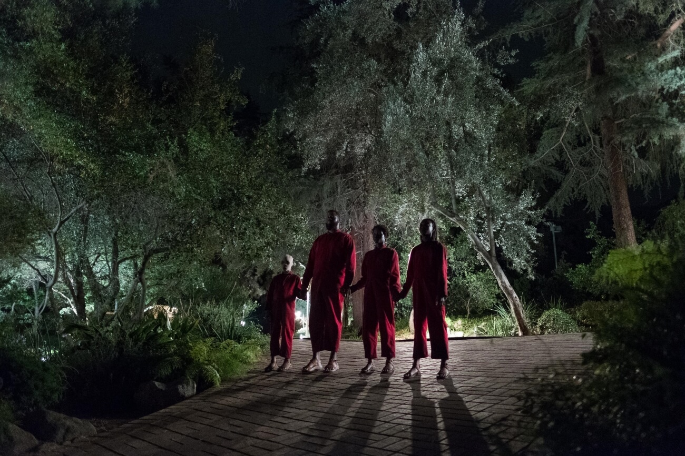

Ми (2019)
Історія
Дружня родина Гейба (Вінстон Дьюк) та Аделеїди (Люпіта Ніонго) Уілсони разом з двома дітьми вирушила на відпочинок. Вони оселилися у своєму пляжному будиночку на узбережжі Каліфорнії, аби провести літо біля моря у компанії друзів. Після насиченого дня сім’я готується до сну. Та доброї ночі побажати один одному не вийде. Поблизу їх будинку з’являються незнайомці, що тримаються за руки. Познайомитися з ними не виходить – ці четверо поводяться доволі агресивно та не приховують бажання вбити Уілсонів. Скоро стає зрозуміло, що ці четверо – це вони самі. І відомий вислів про те, що ти сам є для себе головним ворогом, набуває для відпочивальників нового змісту. Від такого ворога не втекти, бо він знає де ти, що ти робиш та навіть що ти думаєш.
Фільм жахів «Ми» – це нова робота режисера та сценариста Джордана Піла. У 2017 році Піл виборов нагороду Оскар за кращий сценарій фільму «Пастка». Цей фільм жахів став для Піла також режисерським дебютом після тривалої акторської кар’єри.
Інформація
| Актор | Роль |
| Люпіта Ніонго | Аделаїда Вілсон/Ред |
| Вінстон Дюк | Гейб Вілсон/Абрагам |
| Шахаді Райт Джозеф | Зора Вілсон/Амбре |
| Еван Алекс | Джейсон Вілсон/Плуто |
| Елізабет Мосс | Кітті Тайлер/Далія |
| Тім Гайдекер | Джош Тайлер/Текс |
| Ях'я Абдул-Матін II | Расел Томас/Вейланд |
| Анна Діоп | Рейн Томас/Ерту |
| Кара Гейворд | Ненсі/Сід |
| Дастін Ібарра | Трой/Бренд |